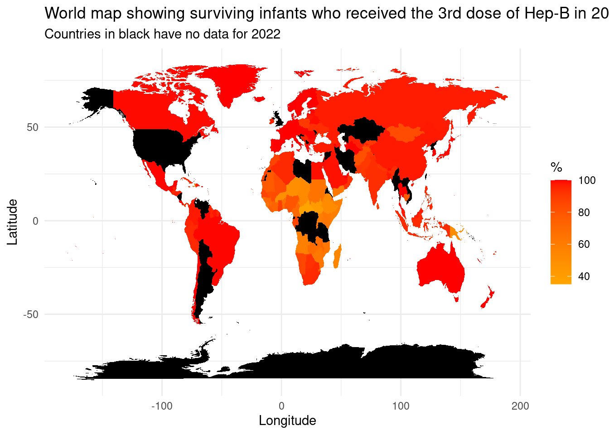
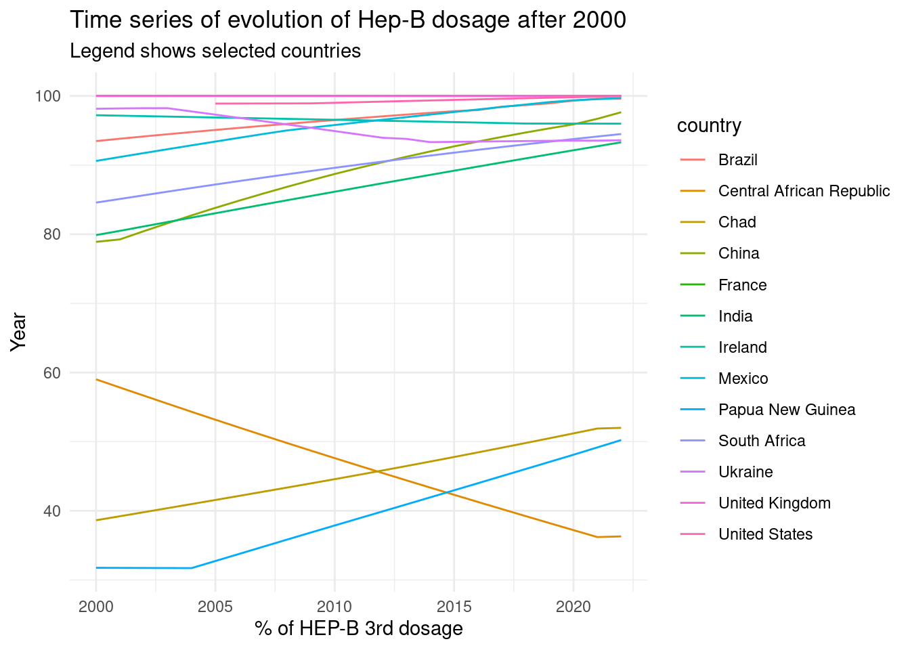
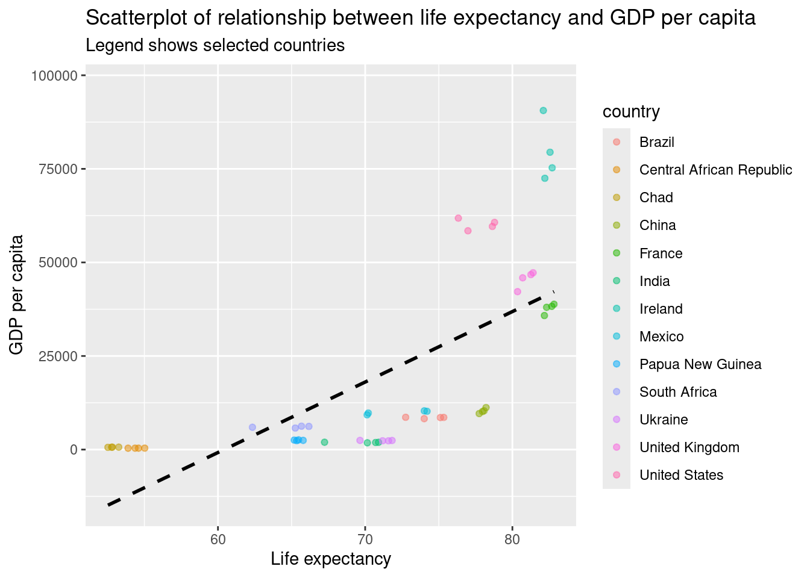
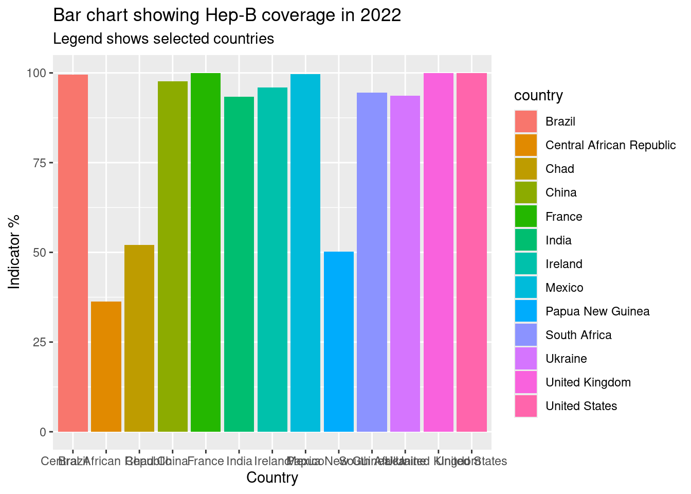

Bridges to Well-being
The impact of: Vaccines, Water and Wealth in Transforming Global Health
Introduction
As part of the search for improved global health, the journey of developing a single vaccine dose can indicate both progress and disparity. This dashboard explores these narratives through relative visualisations that represent the intricate relationship among: health services, vaccination rates, basic water access, economic indicators and their relative overall impact on life expectancy. By examining this data from multiple nations, we unveil the global challenges and progress in the pursuit towards well-being.
Global Map - Illustrating survival rate of infants with Hep-B 3rd dosage
Time-Series - Relevant 3rd Hep-B dosage uptake (2000-2022)

Scatterplot - GDP per capita and life expectancy, a correlation?

Barchart analysis - Global coverage of Hep-B vaccine in 2022

General Recomendations to fix said problems
- Increase Funding
- Allocate more resources towards developing global health initiatives, particularly in relation to vaccines.
- Improve Access
- Enhance greater accessibility towards basic healthcare services and clean water within under-served regions.
- Boost Healthcare Infrastructure
- Invest more into healthcare systems, especially in low-coverage regions.
- Foster International Cooperation
- Encourage greater collaboration between countries to promote more sharing of resources and knowledge.
- Monitor and Evaluate
- Continuously monitor health outcomes and adjust implemented strategies based on data-driven insights.
Conclusion
Analysing the data and stories shown in this dashboard, it becomes clear that the development towards global health is complex. It requires a difficult approach. There is the requirement of combining efforts in vaccination, accessibility to basic services and economic development. This dashboard indicates a need for action, directed at policymakers and communities worldwide. There needs to be collective action taken to change the trends shown as part of this dashboard.